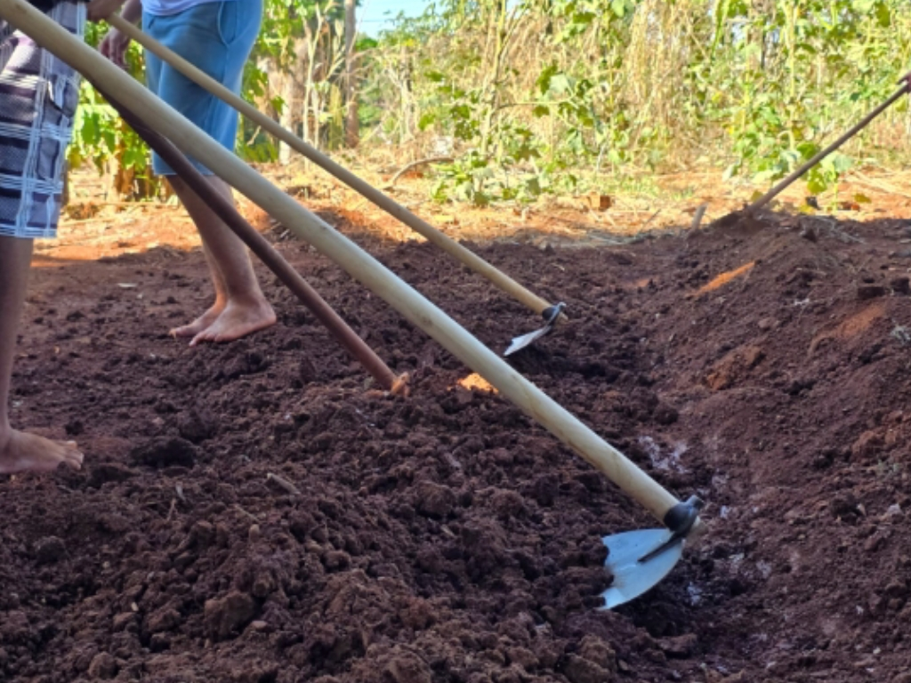

Acompanhe aqui a evolução do Projeto Paraná Faz Ciência: Compostagem e Horta Escolar! Iniciado em 2025 e liderado pelo Professor Ederson Moretti, o projeto tem como palco o Colégio Estadual Arthur de Azevedo.
O que é?
Nosso projeto
O Projeto Compostagem e Horta Escolar consiste em um clube organizado com o propósito de promover a sustentabilidade no colégio, destinando de forma responsável e ecológica os resíduos orgânicos gerados na instituição por meio do processo de compostagem.
Compostagem
A compostagem é um processo natural de reciclagem de matéria orgânica, como restos de alimentos e resíduos de jardim. Através da ação de microorganismos (como bactérias e fungos) e de pequenos animais (como minhocas), esses materiais são transformados em um adubo rico e nutritivo, conhecido como composto ou húmus.
Alunos carpindo.Organizando as composteiras.Participantes do projeto.Construindo as composteiras.Plantando as primeiras mudas.Separando resíduos.Os primeiros canteiros.Nossas primeiras mudas.Nossa horta.
Apresentação do ProjetoDocumentário
Diário de Bordo
Foram formados os grupos de Eletivas, neste dia também foi realizada a seleção dos alunos que irão fazer parte do Projeto de Compostagem e Horta Escolar dos alunos do Colégio Estadual Arthur de Azevedo. Após a escolha os alunos foram para o Laboratório para as primeiras instruções e planejamento das atividades do programa. neste dia tambem participaram os alunos da Eletiva de Pancs ( Plantas alimentícias não convencionais), que irão colaborar com nosso projeto.
Os 30 alunos foram divididos em grupos (entre 5 a 8 pessoas por grupo). Os processos se iniciaram com uma pesquisa com os principais tópicos que serão discutidos no futuro do projeto. Entre os assuntos a serem pesquisados estavam os tipos de solo, PANCS (plantas alimentícias não convencionais), os tipos de compostagem e os processos de automação que seriam usados na horta.
Após o intervalo, algumas pessoas de cada grupo se dirigiram para fora do laboratório, e iriam lavar os baldes para a criação das composteiras. Já tínhamos um modelo claro de como seria, anteriormente, o Professor Ederson Moretti, conhecido popularmente como Eder, havia criado um protótipo, esse que alguns alunos do 3°A foram encarregados de monitorar durante aqueles dias.
No hoje, foram organizados, os principais elementos que estarão sendo debatidos durante todo o projeto/pesquisa. O resultado das pesquisas e a confecção das composteiras devem acontecer na próxima semana.
Na última semana iriamos aguardar os resultados das pesquisas. Enquanto alguns alunos terminavam seus trabalhos, outros davam continuidade aos processos das composteiras. Após a etapa de lavagem dos baldes (realizada na semana anterior), utilizamos furadeiras pam perfurar os recipientes, seguindo uma ordem exata em sua montagem Primeiro balde será o depósito do chorume, sem furos, apenas una abertura retangular em sua tampa, onde será encaixado um filtro, no caso, meia-calça, seguido do segundo balde. Segundo balde será um dos depósitos da matéria orgânica, misturados com matérias secas e organismos vivos, as minhocas. Terá furos maiores na parte inferior, pequenos furos na parte superior de suas extremidades (para a circulação de ar, e segurança para a entrada de demais insetos) e também uma abertura retangular em sua tampa, onde será encaixado o terceiro balde. Terceiro balde será o balde da parte superior, e também tenă furos inferiores, seguidos de furos pequenos na parte superior de suas extremidades, porém sem abertura na tampa, essa permanecerá fechada. No dia de hoje focamos em trabalhar nas composteiras, consequentemente o resultado das pesquisas aguardaram mais uma semana.
Com enxadas amoladas e equipamentos separados, uma equipe de alunos se dirige até o local onde futuramente será a horta automatizada. No terreno haviam muitas ervas daninhas de pequeno porte, e galhos de árvore que atrapalhavam a circulação de luz solar pela área. A equipe iniciou com o auxílio de enxadas, carpir todos os matos, enquanto isso, outra parte dos alunos se dedicavam a coleta e descarte dos entulhos, remoção de raízes e filmagem dos processos. Foi um trabalho difícil, porém, em 1 hora e 30 minutos (tempo da aula), foi finalizada toda a parte inicial de limpeza do local, onde novamente estarão trabalhando novamente na próxima semana. Saindo do terreno, voltamos ao laboratório, onde estavam o restante dos alunos, novamente finalizando suas pesquisas propostas no dia 2 (06/03/25).
No dia 27 de março de 2025 começamos a fazer os primeiros canteiros, foi um dia de muito trabalho, os alunos fizeram a alternância entre a pesquisa e trabalho no local onde será preparada nossa horta automatizada, ou seja, nosso cronograma está no início, pois construímos as composteiras, estamos iniciando as pesquisas e, estamos começando a preparar o terreno para as atividades.
No encontro do dia 03/04, os alunos foram instruídos a responder os formulários enviados pela Universidade Estadual de Maringa, estes formulários também foram encaminhados os formulários para os pais responderem em casa. Após o preenchimento destes formulários os alunos se encaminharam para horta onde trabalharam com na preparação do terreno. Outro grupo de alunos trabalhou no abastecimento das composteiras com os resíduos gerados na cozinha.
No dia 10/04 foi realizada reunião com os alunos do clube para definir os equipamentos a serem adquiridos para a execução do projeto de Compostagem e Horta escolar, após os alunos foram para a horta continuar a organização do terreno.
No dia 24/04, choveu a tarde toda, como não foi possível realizar os trabalhos de limpeza do terreno, fomos para o QG do Clube (laboratório) para organizar as pesquisas e planejar as próximas atividades.
Continuamos o preparo do solo para a confecção dos canteiros, na primeira parte do terreno onde faremos uma horta sem automatização, com o intuito dos alunos se adaptarem ao trabalho e manejo do solo para quando forem para o local do estudo científico, já estejam totalmente ambientados aos procedimentos.
No dia 12/05, foi realizada a organização das composteiras que já estão sendo alimentadas todos os dias com os resíduos gerados pela cozinha, neste dia os alunos puderam observar os primeiros resultados da compostagem, pois algumas composteiras já estavam com os resíduos totalmente compostados (decompostos), está chegando a tão esperada hora de pedir as minhocas para acelerar o processo de compostagem.
No dia 22/05 foram plantadas as primeiras mudas de nossa horta, após várias semanas de chuva no dia de atendimento do projeto, hoje o solo estava menos encharcado. Os alunos adoraram a experiência, e a partir de agora o trabalho só aumenta, pois todos os dias eles tem que coletar os resíduos na cozinha e cuidar da irrigação da horta, já que o sistema de irrigação ainda não foi implementado.
Nesta data, os alunos se dedicaram à rega da horta e observaram atentamente o crescimento das primeiras mudas. Foi feito um registro fotográfico das plantas, com o objetivo de acompanhar o desenvolvimento ao longo das semanas, Durante a atividade, os estudantes comentaram sobre as diferenças de crescimento entre os canteiros e reforçaram a importância da rega frequente para a manutenção da horta.
Realizou-se a limpeza dos canteiros, com retirada de ervas daninhas e reorganização do espaço da horta. Os alunos trabalharam em duplas, promovendo colaboração e divisão de tarefas. Também observaram o andamento da compostagem, percebendo o aquecimento do material. O professor explicou que esses sinais demonstram que o processo de decomposição está ocorrendo de forma correta.
Os estudantes realizaram o monitoramento da horta, medindo a altura das mudas e registrando a quantidade de folhas em diferentes canteiros Foi montada uma tabela simples para organizar os dados. Em seguida, discutiram a importância da coleta de informações periódicas para analisar se o adubo influencia positivamente no crescimento das plantas, os alunos também perceberam que os lugares onde havia menos luz solar as plantas de desenvolviam menos.
Nesta semana, foi promovida uma roda de conversa sobre sustentabilidade e a relação entre a compostagem e a merenda escolar. Os alunos refletiram sobre como o reaproveitamento dos resíduos da cozinha reduz o lixo e contribui para um ambiente mais limpo. Alguns destacaram que se sentem mais responsáveis em descartar corretamente os restos de alimentos, entendendo que eles se transformam em adubo.
Nesta data, recebemos a visita do MUDI (Museu Dinâmico Interdisciplinar da UEM), que acompanhou as atividades do Clube de Compostagem e Horta Escolar. Os alunos tiveram a oportunidade de apresentar os trabalhos desenvolvidos até o momento para os tutores e para a comunidade escolar, explicando as etapas do processo de compostagem, a utilização do adubo na horta e os resultados iniciais obtidos com o primeiro plantio. A atividade foi um momento de socialização do conhecimento e valorização do protagonismo estudantil, pois os alunos se sentiram responsáveis por compartilhar o que aprenderam, mostrando segurança ao explicar conceitos científicos e o impacto do projeto na escola. A presença dos representantes do MUDI e da UEM enriqueceu a experiência, fortalecendo a parceria e trazendo motivação para a continuidade do projeto.
Retorno das férias. Foi realizada uma roda de conversa sobre a visita do MUDI e as apresentações feitas para os tutores e a comunidade. Os alunos refletiram sobre a importância dessa experiência e iniciaram a organização de novos registros e materiais para socializar o projeto dentro da escola, incluindo a ideia de montar uma exposição permanente no mural.
Os alunos realizaram a manutenção da horta, com rega e limpeza dos canteiros, e revisaram os registros feitos até o momento. Também discutiram as aprendizagens construidas no semestre e os próximos passos do projeto
Os estudantes cuidaram da horta com a rega e o tutoramento das mudas que cresceram mais rapidamente. Durante a observação, notaram a presença de pequenos insetos e discutiram soluções naturais de controle de pragas, como o uso de calda de fumo e extrato de alho. O professor aproveitou para contextualizar sobre o impacto dos agrotóxicos e a importância das alternativas sustentáveis.
Nesta data, os alunos se dedicaram à manutenção das composteiras, realizando a aeração do material, o controle da umidade e a adição de novos resíduos orgânicos da cozinha escolar Também observaram a presença de insetos, discutindo o papel destes no processo de decomposição. O professor explicou a importância de equilibrar os residuos verdes e secos para garantir um composto de qualidade. Essa atividade reforçou o entendimento sobre a dinâmica da compostagem e mostrou aos estudantes como o acompanhamento continuo é fundamental para o sucesso do projeto.
Nesta data os alunos fizeram novos canteiros e avaliaram as plantas que poderiam ser incorporadas na alimentação escolar, seguido da manutenção e preparação dos canteiros para receberem as novas mudas na próxima semana. Essa atividade contribuiu para a identificação nutricional dos alimentos vindos da horta, como também para reconhecer as necessidades nutricionais presentes no colégio, a fim de serem mitigadas.
As mudas encomendadas na semana anterior chegaram e os alunos se dividiram em dois grupos, onde um dos grupos ficou responsável pela plantação e o outro ficou responsável pela divisão do trabalho semanal Entre as novas plantas estavam alface, repolho e beterraba, que foram devidamente plantas e regadas com o auxilio do professor. Essa iniciativa reforçou o entendimento sobre o planejamento agrícola e mostrou aos estudantes como o preparo meticuloso é essencial para o sucesso de um projeto de horta escolar diversificado e ecológica.

Neste dia, foi observado que deveria ser feito uma limpeza focada nos dois espaços destinados a horta. Primeiramente os alunos foram destinados à horta superior, onde removeram ervas invasoras e demais residuos. Também fizeram a manutenção das composteiras com novos residuos orgânicos. Essa atitude ajudou a reforçar a necessidade do cuidado ambiental, contribuindo para a ecologia e limpeza escolar. A limpeza do ambiente inferior será realizada na próxima semana.
Nesta data, foi continuada a limpeza da semana anterior, focando na horta inferior, onde com o auxilio do professor e enxadas, os alunos removeram ervas daninhas e araram o solo. Essa é a horta onde futuramente será aplicada a pesquisa em triplicata e a automatização que auxiliará no monitoramento. O trabalho realizado ajuda na progressão do projeto e no aprendizado dos participantes.
Neste dia, os alunos finalizaram a limpeza dos dois locais e integraram novas compoteiras ao projeto, desse modo produzindo mais composto e fertilizantes orgânicos (chorume). Essa fabricação contribui para uma produção maior dos produtos orgânicos e para produções agrícolas sustentáveis.
Neste dia os alunos ficaram na parte teórica juntamente com o professor que explicou como deveriam realizar as pesquisas sobre o projeto. Alguns alunos foram separados em um grupo que seria focado na construção de um site para o projeto e outros na criação de um modelo de inteligência artificial focado em compostagem agroecologia. Esses trabalhos buscam integrar a tecnologia à sustentabilidade, a fim de buscar inovações práticas para o enfrentamento de problemas ambientais.
Nesta data, os alunos separados para a produção tecnológica continuaram a desenvolvimento de seus trabalhos. A outra parte dos alunos foram encaminhados à horta para a manutenção semanal do local, A divisão realizada auxilia no funcionamento do projeto, assim como valoriza as aptidões e preferências dos participantes.
Como haviam combinado na última semana, os alunos se dividiram em dois grupos, em que uma parte estava na horta averiguando as plantas, o desenvolvimento e fazendo o controle de pragas de maneira orgánica Enquanto a outra parte começou a desenvolver o site e o modelo de assistente de IA. A divisão de alunos por aptidões teve éxito, visto que, o projeto mostrou uma progressão positiva nas últimas semanas.
Em comemoração ao Dia das Crianças, o colégio realizou um Bingo, por decorrência do evento, neste dia não houve atividades do projeto de compostagem e horta.
Nesta data, com a chegado do motocultivador adquirido com recursos do Paraná Faz Ciência. Os alunos responsáveis pelo setor da horta araram a terra do espaço inferior com o objetivo de iniciar o processo de criação de uma nova horta. Os alunos do setor tecnológico continuaram progredindo em suas pesquisas e desenvolvimento.
Hoje, os alunos finalizaram os documentos e montaram os protótipos das composteiras que serão levados para a FECCI na próxima semana. Foi um momento de organização, conferência dos materiais e ajustes finais antes da apresentação oficial do projeto.
Agradecimentos
Agradecemos profundamente o empenho e a dedicação de todos os alunos participantes, cujo entusiasmo foi essencial para o desenvolvimento deste projeto. Manifestamos, em especial, nossa gratidão ao professor Ederson Moretti, por sua orientação, apoio e compromisso em cada etapa dessa jornada de aprendizado. Estendemos também nossos agradecimentos à Secretaria de Educação do Estado do Paraná e a todos os seus colaboradores, pela oportunidade e pelo incentivo à concretização deste projeto, que representa não apenas um trabalho acadêmico, mas também um gesto de valorização da educação, da sustentabilidade e do trabalho coletivo.
Contato
Entre em contato para colaborações, dúvidas ou feedback sobre o projeto.